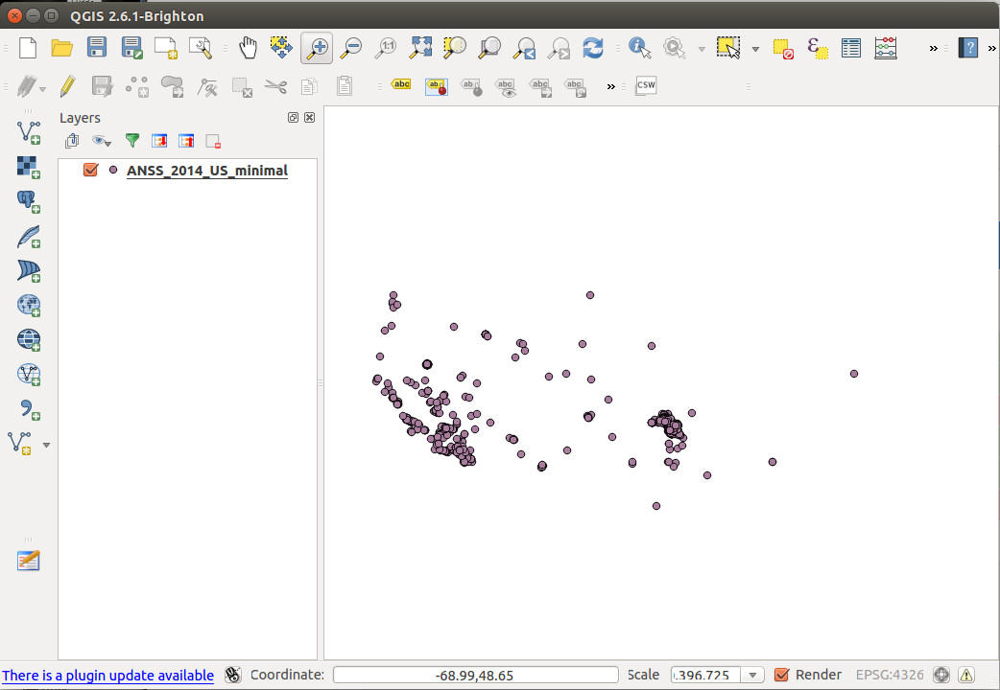
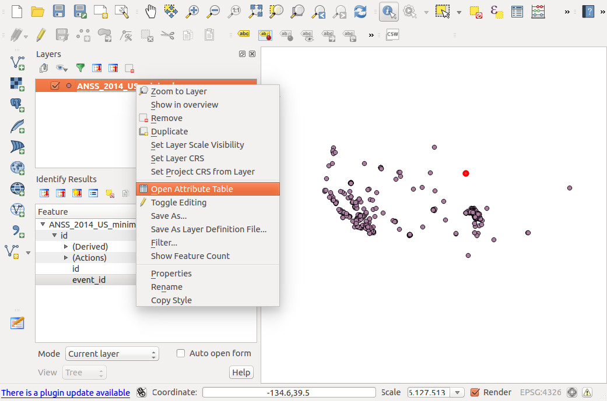
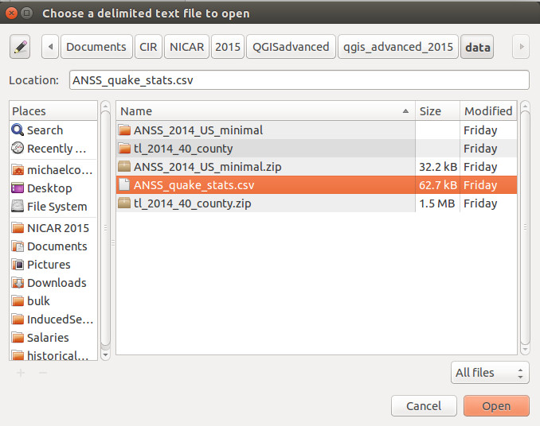
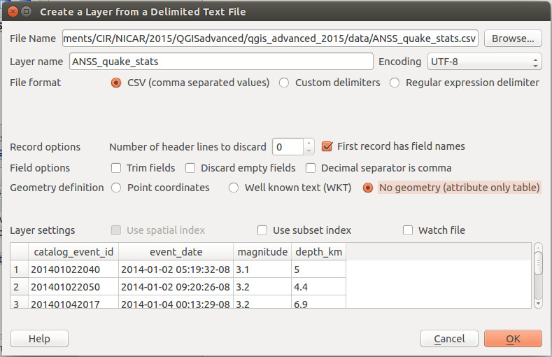
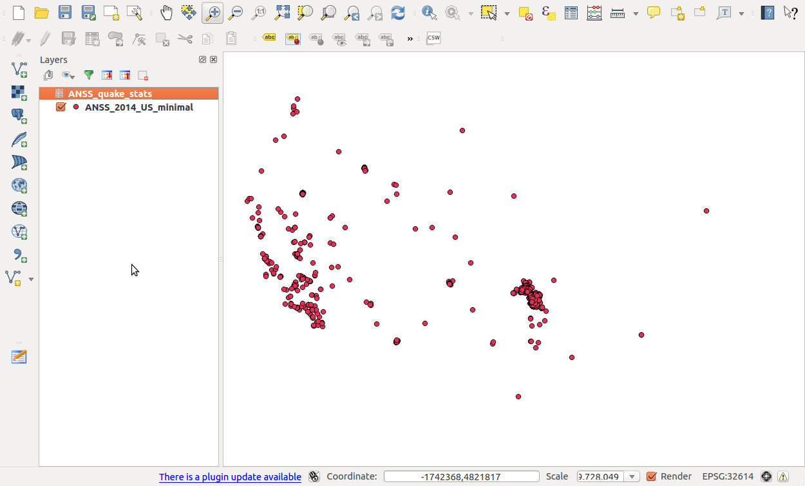
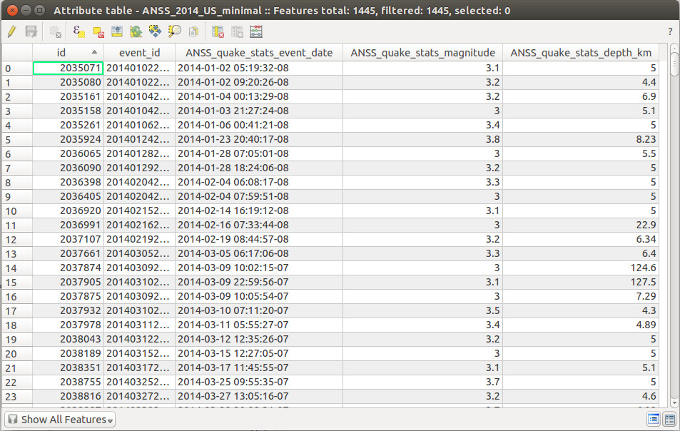
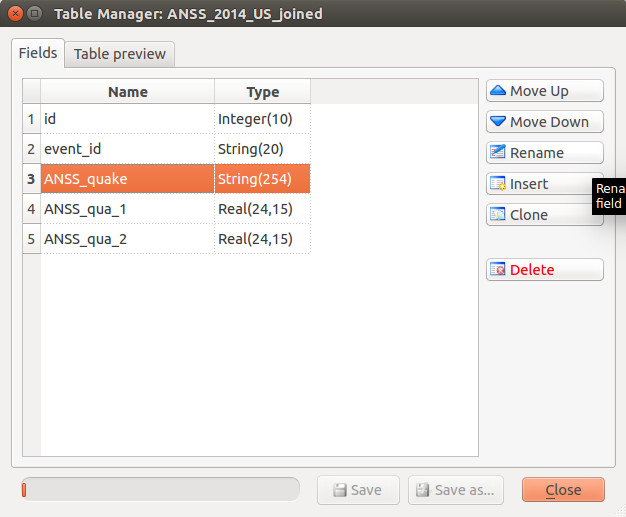
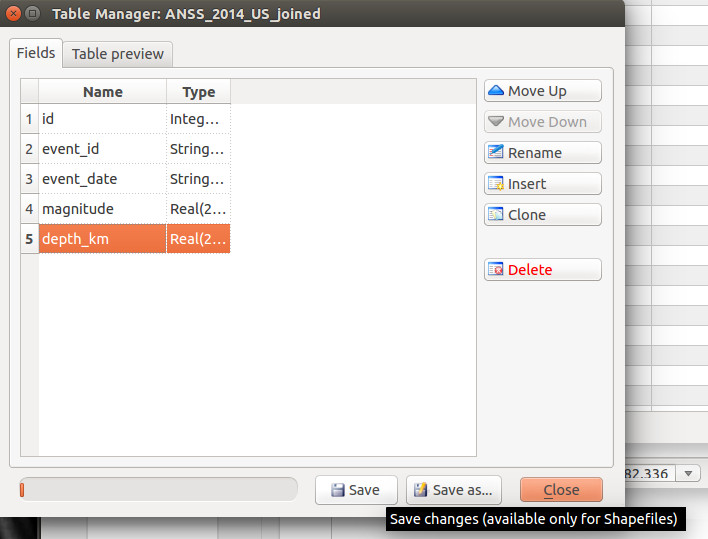

Earthquakes in Oklahoma
Did you know there were more earthquakes in Oklahoma than in California in 2014? That's pretty scary. But the quakes were concentrated in a few key areas. We want to make a map to show who is experiencing the most earthquakes, and will use data joins, reprojection and hex binning to make it happen. Finally, we'll simplify some of our spatial data so it's more ready to use on the big, bad Internet.
Open earthquakes shapefile
Click the button to add a new vector layer.
Click "browse" to choose a shapefile.

Our first dataset is a shapefile of earthquake epicenters from the ANSS catalog. You can find the zipped shapefile in the "data" folder of the project. A shapefile is actually several files with the same name and different extensions. Choose ANSS_2014_US_minimal.shp:
Then click "Open." By default you'll see the full extent of the layer, which may look a bit confusing because the Aleutian Islands cross the International Dateline. So use the zoom button to zoom into the contintental United States (the biggest blob).
We can see what other columns besides the epicenter we have by showing the attribute table. RIght-click on the layer in the Layers panel to select "Open attribute table."
When we open the attribute table, there's not much there beyond the spatial information, just a primary key field and an event_id field.

This is an extreme example (which is entirely contrived on my part) of a common problem: you have spatial data in one table or shapefile, and another attribute you want to visualize spatially in a different file.
Open CSV with more data
In this case, we have data about when the earthquake occurred, magnitude and depth in another CSV. We can join the two datasets because both datasets have a column we can join on: event_id in our shapefile, and catalog_event_id in our CSV file, called ANSS_quake_stats.csv.
Use the button in the left rail of QGIS to add a delimited text layer.
Choose the csv file and click "Open" to bring up a screen with more import options:
The only option to change in this case is to select "No geometry (attribute only table)," since there is no spatial information in this csv. Then click OK. Nothing on the map will change, but there will be a new layer in the Layers panel, ANSS_quake_stats.

Join shapefile and CSV
Now we'll create a join. To start, right-click on the shapefile layer (ANSS_2014_US_minimal) --- NOT the CSV layer -- and choose "Properties."
Now click the join button in the left menu of the popup, then click the button to create a new join.
Now we'll tell QGIS what we want to join and how. For "Join layer," choose our CSV file. And then tell QGIS which two fields are the same in the tables: catalog_event_id in the csv, and event_id in the original shapefile.
Click "OK" in the popup, then click "OK" again to close the layer properties.
Let's check our work by opening up the attribute table again. If we did the join correctly, you should see data in the newly joined columns, like so:
If you see a bunch of NULL values in the joined columns, it likely means you joined on the wrong fields.
Save joined data as new shapefile
Even though our shapefile and CSV are now joined, we can't do fun stuff like filter by attributes in the joined CSV, like magnitude or date. So we'll save a new copy of the shapefile with the joined attributes. Right-click on the shapefile layer and click "Save as."

There's a few things to make sure we're doing right here. First, click "Browse" to tell QGIS where to save the new file, which you should call ANSS_2014_US_joined.shp so we're all on the same page. For "Format" we want ESRI Shapefile. For CRS (coordinate reference system), we want Layer CRS, and in the box below it should say WGS 84. WGS 84 means that our coordinates are in straight latitude/longitude pairs and are not projected. We'll mess with this more in a minute, but as long as your popup matches this click "OK."
Great! Now we have a single shapefile with all of our earthquake data. Let's filter! Right-click on the ANSS_2014_joined layer and click Filter:
Hey! Where are my hard-won event_date, magnitude and depth columns?!
Zounds! Column shenanigans!
What happened here? If you recall, when we did our data join, the new columns had the csv layer name pre-pended to them. When we saved the joined file as a new shapefile, the column headers got truncated to the first few characters, which are clearly unhelpful.
This isn't really QGIS's fault, but has more to do with the nature of shapefiles. The data component of a shapefile is stored as a DBF file, and DBF column headers can be a maximum of 10 characters long. This made sense long ago when memory was more precious, but it's stupid nowadays. Still, it is reality and we shall endeavor to practice professionalism and forbearance.
Can we fix it? Yes we can!
Installing the Table Manager plugin
It's a little silly that we have to install a plugin to change column names, but we are endeavoring to practice professionalism and forbearance, and installing plugins is easy:
Click Plugins > Manage and Install Plugins.
Search for "table" in the search box, and choose the Table Manager plugin:
Now click "Install plugin."
Fix column names
With the plugin installed, you should see a button in your left rail. Select the joined-and-saved layer (ANSS_2014_US_joined), and click the button.
We are presented with a list of columns in our layer. Luckily for our sanity, QGIS does preserve the column order from the original join, so you can use the order to extrapolate which column is which. (That said, you should always verify the results if you're using this data in battle.)
Click "Rename" to change each column name, like so:
Click "Save" to confirm the new column headers and re-save the shapefile.
Open Oklahoma counties
Now we turn to extracting only the earthquakes that occured in Oklahoma from our larger, national dataset. We'll use a shapefile of Oklahoma counties from the Census Bureau to spatially filter our earthquake data.